虽然是无理数，但它也是方程x2
=2的解。但是超越数这种无理数是不能用一个包含有限多个项的方程来描述的。当超越数的概念被首次提出时，没有人知道它们是否存在。
虽然是无理数，但它也是方程x2
=2的解。但是超越数这种无理数是不能用一个包含有限多个项的方程来描述的。当超越数的概念被首次提出时，没有人知道它们是否存在。19世纪初，德文郡一位石匠有一个神童儿子名叫乔治·帕克·比德（George Parker Bidder），这个消息传到了夏洛特女王的耳朵里。她问了他一个问题：
“从康沃尔到苏格兰的法雷特的距离是838英里，蜗牛以每天8英尺 [1] 的速度爬行，它需要多久才能爬完？”
当时的一本畅销书提及了这次交谈和得到的答案（553080天），这本书叫《著名心算师乔治·比德的简传：他用惊人的速度解决了英国主要城镇的人们向他提出的各种最难的问题！》，书中列出了这位神童给出的最伟大的计算，包括经典的“119550669121的平方根是多少？”（345761，他用了半分钟回答出来），以及“232个大桶，每桶重
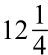
英担22磅 [2] ，一共有多少磅糖？”（323408磅，他也只用了半分钟就回答出来了。）阿拉伯数字让每个人都能更容易地做算术，但一个意想不到的结果是，一些人也被发现具有惊人的算术技能。通常，这些神童只在数字方面具有超常的能力，在其他方面则可能平平无奇。比如，德比郡的农场工人杰迪代亚·巴克斯顿（Jedediah Buxton）尽管几乎不识字，但他在乘法方面的计算能力却让当地人惊叹不已。例如，他可以计算出1法寻 [3] 翻倍140次之后是多少。（答案是一个长39位的数字，再加上2先令 [4] 8便士。）1754年，许多人对巴克斯顿的天赋感到好奇，他因此受邀访问伦敦，在那里他接受了英国皇家学会成员的测试。他似乎有些高功能自闭症的症状，因为当他被带去看莎士比亚的《理查三世》时，他对剧情表示非常困惑，但他告诉邀请他来看戏的人说，演员们走了5202步，说了14445个词。
19世纪，“神速计算者”可以成为闪耀在国际舞台上的明星。有些人在很小的时候就表现出了天赋。来自美国佛蒙特州的齐拉·科尔伯恩（Zerah Colburn）第一次公开表演时，年仅5岁。8岁时，他怀抱着成功的梦想前往英国。（科尔伯恩生来有六个指头，但不知道他多出来的手指是否给他学习计数带来了优势。）与科尔伯恩同时代的神童还有德文郡的小伙子乔治·帕克·比德。1818年，科尔伯恩14岁，比德12岁，两位神童在伦敦的一家酒吧里相遇，一场数学决斗不可避免地发生了。
科尔伯恩被问到，如果一个气球以每分钟3878英尺的速度飞行，而地球的周长是24912英里，那么该气球绕地球飞行一圈需要多长时间。为了选出“地球上最聪明的男孩”这个非正式头衔，这个国际化问题再恰当不过了。但经过9分钟的思考，科尔伯恩还是没有给出答案。另一方面，伦敦一家报纸则夸张地赞扬了他的对手，说他的对手只用了两分钟就给出了正确答案，“23天13小时18分钟，大家对此报以热烈的掌声。有人接着向这位美国男孩提出了许多其他问题，但他都拒绝回答。而年轻的比德则答出了所有问题。”然而，在他的自传《由齐拉·科尔伯恩本人撰写的回忆录》中，这个美国男孩给出了关于比赛的另一个版本的叙述。“（比德）在算术的高级分支中表现出了强大的能力和思维能力。”他说，随后加上了一些不屑一顾的情绪，“但他算不出平方根，也算不出数字的因数。”这次比赛并没能决出冠军。爱丁堡大学随后接收比德成为学生。比德后来成了一名重要的工程师，他最初在铁路工作，后来负责监督伦敦维多利亚码头的建设。而科尔伯恩则回到了美国，成为一名传教士，于35岁时去世。
速算的能力与数学洞察力和创造力之间没有很大关系。只有少数几位伟大的数学家展现出了“神速计算”的技巧，而许多数学家的算术却极其差。亚历山大·克雷格·艾特肯（Alexander Craig Aitken）是20世纪上半叶一位著名的速算大师，他还是爱丁堡大学的数学教授。1954年，艾特肯在伦敦工程师学会进行了一场演讲，他在演讲中解释了他在表演中常用的一些方法，比如一些代数的捷径，以及记忆力的重要性。为了证明自己的观点，他飞快说出了1/97化成小数是多少，这些数字在96位之后将重复出现。
艾特肯以一段懊悔的评论结束了他的演讲，他说，当他得到了第一台台式计算器后，他的能力就开始衰退。“心算可能像塔斯马尼亚人或莫里奥里人一样，注定会灭绝。”他说道，“你可能会去调查一个奇怪的标本，对此产生一种兴趣。在场的某些听众可能会在公元2000年说：‘是的，我知道有这样一个人。’”
但是，这次，艾特肯算错了。
“神经元！准备好了！开始！”
随着一阵仿佛不耐烦的“嗖嗖”声，在心算世界杯的乘法回合上，选手们翻开了试卷。莱比锡大学的教室里一片寂静，17名男选手和2名女选手在思考第一个问题：29513736×92842033。
算术又开始流行了。30年前，第一台廉价的电子计算器导致了心算技能的广泛消失，但现在，这种技能重新引起了强烈反响。报纸每天都刊登数学脑筋急转弯，带有算术谜题的流行电脑游戏让我们的头脑更加敏锐，在更高端的层面上，速算者还会去参加国际比赛。心算世界杯由德国计算机科学家拉尔夫·劳厄（Ralf Laue）于2004年创办，每两年举办一次。这个比赛结合了劳厄的两个爱好：心算和不断创造不寻常的纪录［比如，一分钟内用嘴接住15英尺（约4.57米）外扔过来的葡萄，最高纪录是55颗］。互联网帮助了他，使他能够遇到志同道合的人，因为通常心算家并不外向。在这项于莱比锡举行的赛事中，来自秘鲁、伊朗、阿尔及利亚和澳大利亚等国的选手参加了比赛，他们也被称作“数学运动员”。
如何衡量计算能力？劳厄采用了吉尼斯世界纪录所选定的类别：两个八位数的乘法、10个十位数的加法、六位数的平方根（精确到8个有效数字），以及指出1600到2100年中任意日期是星期几。最后一项被称为日历计算，这种计算在速算的黄金时代就有，当时表演者会问观众的出生日期，然后立即说出它是星期几。
规则和竞争精神是以牺牲戏剧效果为代价的。世界杯上最年轻的参赛者是一个来自印度的11岁男孩，他表演了“空气算盘”。他的手疯狂地抽搐着，重新排列脑中想象中的珠子，而其他参赛者则十分安静，只是偶尔写下答案。（根据规定，只能写最终答案。）8分25秒后，西班牙的阿尔韦托·科托（Alberto Coto）像一名兴奋的学生一样举起手来。这名38岁的男子在那段时间内完成了10道两个八位数相乘的运算题，打破了世界纪录。这显然是一个了不起的成就，但看着他完成速算，就像监考一场考试一样无聊。
然而，在莱比锡的赛程中，世界上最著名的心算师，法国学生亚历克西·勒迈尔（Alexis Lemaire）缺席了，他更喜欢用另一种标准来衡量计算能力。2007年，27岁的勒迈尔在伦敦科学博物馆完成了一项壮举，当时他只用了70.2秒就计算出了以下数字的13次方根：
85 877 066 894 718 045 602 549 144 850 158 599 202 771 247 748 960 878 023 151 390 314 284 284 465 842 798 373 290 242 826 571 823 153 045 030 300 932 591 615 405 929 429 773 640 895 967 991 430 381 763 526 613 357 308 674 592 650 724 521 841 103 664 923 661 204 223
这个数字有200位，在70.2秒内连读都读不完。但是，这是否正如他所宣称的，他的壮举意味着他是有史以来最伟大的速算者？这个问题在计算领域中有着深刻的争议，齐拉·科尔伯恩和乔治·比德在近200年前的争论也可以被归结到这个问题上，两人在各自的计算领域上都是杰出的。
术语“a的13次方根”是指与自身相乘12次后等于a的数字。与自身相乘12次后得到一个200位的数字，这样的数字是有固定数目的。（这个固定的数量很大。大约有400万亿种可能性，它们全部都是16位长，以2开头。）因为13是素数，被认为是不吉利的，所以勒迈尔的计算被赋予了神秘的光环。但事实上，13也带来了一些优势。例如，13个2相乘的答案以2结尾，13个3的答案以3结尾，4、5、6、7、8和9也都是如此。换言之，数字13次方根的最后一位与原始数字的最后一位相同。我们可以不费吹灰之力就得到这个数字，不用进行任何计算。
勒迈尔没有透露的是，他已经想到了计算其他14位数字的方法。纯粹主义者可能会说，这是不公平的，他的技巧算不上一种计算上的成功，而更多是一种对大量数字串的记忆技巧。他们指出，勒迈尔无法算出任意一个200位数的13次方根。在伦敦科学博物馆里，他是从给定的几百个数字中自己选择了一个他想要计算的数字。
不过，勒迈尔的表演更符合旧式舞台计算的传统。观众想感受震撼的体验，而并不想理解过程。相比之下，在心算世界杯上，科托无法选择要解决的问题，他在计算29513736×92842033时，也没法使用隐藏的技巧，他只能用1到9的乘法表。八位数乘八位数的最快方法是《吠陀》格言中的“垂直与交叉”，它将结果分解成64个一位数的乘法。他平均只用51秒就能找到正确的答案。知道他是怎么算的可能使结果没那么耀眼，但这显然仍是一个惊人的壮举。
我和莱比锡的参赛选手聊过之后，发现他们中的许多人都是因为维姆·克莱因（Wim Klein）爱上了速算，他是一位荷兰速算家，20世纪70年代曾名噪一时。克莱因在1958年时已经是马戏团和音乐厅的“老手”了，那时他在欧洲顶级物理研究所——位于日内瓦的欧洲核子研究组织（CERN）得到了一份工作，为物理学家提供计算。他可能是最后一位被当作计算器的人。随着计算机的发展，他的技能变得多余，退休后他又回到娱乐界，经常出现在电视上。（事实上，克莱因是最早推动13次方根计算的人之一。）
比克莱因早一个世纪的另一位“人类计算器”是约翰·扎哈里亚斯·达斯（Johann Zacharias Dase），他也被科学机构雇来做计算。达斯出生在汉堡，青少年时期就开始进行速算，当时他受两位杰出数学家的庇护。在电子或机械计算器出现之前，科学家依赖对数表来进行复杂的乘法和除法运算。每个数字都有自己的对数，对数可以通过一个复杂的分数相加的过程来计算，我稍后会更详细地解释。达斯计算出了前1005000个数的自然对数，每个数精确到小数点后7位。他花了三年时间，但他说自己很喜欢这项工作。之后，在数学家卡尔·弗里德里希·高斯的建议下，达斯开始了另一个宏大的项目：编制7000000到10000000之间所有数字的因数表。这意味着，他要检查这个范围内的每一个数字，并计算出其因数，也就是所有可以整除它的数。例如，7877433只有两个因数：3和2625811。达斯在37岁不幸去世，当时他已经完成了大部分工作。
然而，达斯还有另一项让他名留青史的计算。他在青少年时期计算出了π的小数点后200位，创下了当时的纪录。
自然界中的圆无处不在，无论是在满月、人类和动物的眼睛，还是鸡蛋的横截面上，你都能看到圆形。把狗拴在一根柱子上，当绳子被拉紧时，它行走的路径是一个圆。圆是最简单的二维几何形状。古埃及农民在一片圆形的田地里计算要种多少庄稼，或者古罗马机械师在测量制作轮子所需的木头的长度时，都需要用圆来计算。
早在古代文明时期，人们就意识到，无论你画的圆有多大，圆的周长与直径之比都一样。（周长是围着圆走一圈的距离，直径是穿过它的距离，见图4-1。）这个比率被称为π，也叫圆周率，它的计算结果比3大一点儿。所以，如果你取一条长度等于圆的直径的线，把它弯曲起来叠在圆周上，你会发现圆的周长刚好是直径的3倍多。
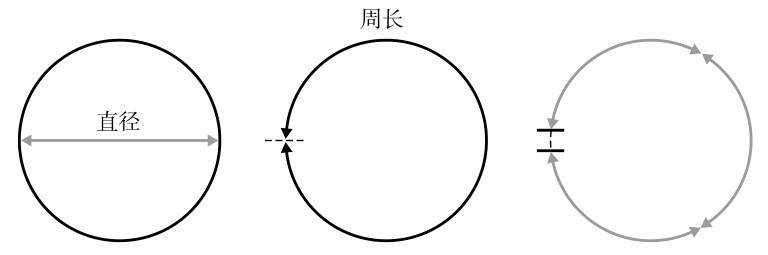
图4-1 圆的周长是其直径的3倍多
虽然π是圆的基本参数之间的简单比率，但要算出它的确切值却并非易事。这种难以捉摸的特性，使π几千年来一直成为人们着迷的对象。它是唯一一个既成为凯特·布什（Kate Bush）的歌名，又成为纪梵希的香水名字的数。纪梵希的公关部门发布了以下内容：
π
超越无限
四千年过去，谜题依旧。虽然每个小学生都在学习π，但这个熟悉的符号背后仍然隐藏着极复杂的内涵。
为什么选择π来象征永恒的阳刚？
它关乎标志和方向。如果说π是一个长期求而不得的故事，那也是一幅传说中寻求知识的征服者的肖像。
π与男人有关，所有男人，包括他们的科学天赋，他们对冒险的爱好，他们的行动力，还有他们对极限的热情。
最早得到π的近似值的是古巴比伦人，他们取用了
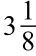
这个值，埃及人使用的值是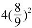
，它们转换成小数分别是3.125和3.160。《圣经》上有一句话揭示了π为何被取为3：“他又铸了一个铜海，样式是圆的，高五肘 [5] ，径十肘，围三十肘。”（《列王纪》7:23）如果铜海是圆形的，周长30肘，直径10肘，那么π就是30/10，也就是3。对于《圣经》中这个不准确的值，人们提出了许多理由，例如铜海是在一个有着厚厚边缘的圆形容器中。在这种情况下，原文中10肘的直径包括了海洋和边缘（也就是说，海洋的真实直径略小于10肘），而海洋的周长则取的是边缘的内侧长。还有一个更为神秘的解释：由于希伯来语发音和拼写的特殊性，“线”这个词，即qwh的发音是qw。我们把这些字母在数字命理学中的值加起来，qwh等于111，qw等于106，用3乘以111/106会得到3.1415，精确到了5个有效数字。
历史上第一位对发现π怀揣极大热情的天才，就是科学史上洗过澡的那位。浴缸中的阿基米德注意到他排出的水的体积等于他自己的身体浸在水下部分的体积。他立刻意识到，他可以通过浸没物体来确认任何物体的体积，比如锡拉丘兹国王的王冠。他可以通过计算王冠的密度来确定这件王室珍宝是不是由纯金制成的（事实证明，不是）。想到这里，他抑制不住激动，赤身裸体地跑到街上大喊“尤里卡（我发现了）！”（至少对锡拉丘兹的市民来说，）他展现了一种永恒的男子气概。阿基米德喜欢解决现实世界中的问题，不像欧几里得，欧几里得只处理抽象问题。阿基米德有许多发明，其中据说还包括一个巨大的弹弓和一组大型反射镜系统，这个系统把太阳光集中反射到一处，可引起火灾，锡拉丘兹被围困时罗马船只就是这样被烧毁的。阿基米德也是第一个发明计算π的方法的人。
他首先画了一个圆，然后构建了两个六边形，一个是圆的内接六边形，另一个是圆的外切六边形，如图4-2所示。通过计算六边形的周长，我们知道π一定在3到3.46之间。如果我们认为圆的直径等于1，那么内部六边形的周长是3，它小于圆的周长π，而π小于外部六边形的周长
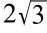
，精确到小数点后两位就是3.46。（阿基米德计算这个值的方法本质上以微妙的方式预示着三角学的诞生，但它太复杂了，我们没法在这里深入探讨。）因此，3<π<3.46。
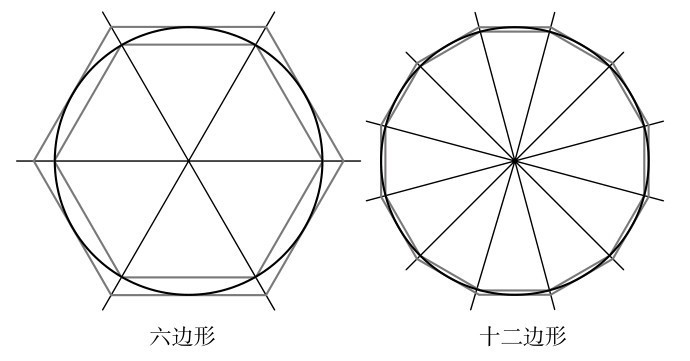
图4-2 用多边形周长来近似计算圆周长
如果你用两个包含更多条边的正多边形重复计算，你会得到一个更窄的π的范围。因为多边形的边越多，它们的周长就越接近圆周长，我们在图4-2中也能看到，图中使用了十二边形。多边形就像不断向π靠近的两堵墙，从上面和下面“挤压”，把π的范围变得越来越窄。阿基米德从六边形开始，最终构建了九十六边形，得到π的范围是：
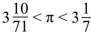
。这可以转换为3.14084<π<3.14286，精确到小数点后两位。
但是“π的猎手”不会就此止步。为了更接近真实的数值，需要构造有更多条边的多边形。在3世纪的中国，刘徽采用了一种类似的方法，用具有3072条边的多边形，将π的值精确到小数点后五位：3.14159。两个世纪后，祖冲之和他的儿子祖暅又进了一位，用具有12288条边的多边形，让精确度达到了3.141592。
烦琐的符号限制了古希腊人和中国人的计算能力。当数学家最终可以使用阿拉伯数字时，π的计算迅速有了新的进展。1596年，荷兰击剑大师鲁道夫·范科伊伦（Ludolph van Ceulen）用一个有60×229 条边的改良多边形，计算出了π小数点后的20位。记录他的计算结果的小册子最后写着：“只要你想，你就能离目标更近一点点。”在计算π的值方面，没有人的冲动比他更强烈。他继续计算，后来将π精确到小数点后32位，然后是35位，这些数字都刻在他的墓碑上。在德国，π也叫作“鲁道夫的数”。
在长达两千年的时间里，精确计算π的唯一方法就是使用多边形。但在17世纪，戈特弗里德·莱布尼茨和约翰·格雷戈里（John Gregory）用以下算式开创了计算π的新时代：
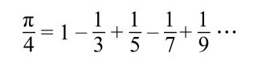
换句话说，π的四分之一等于一减去三分之一，加五分之一，减去七分之一，加九分之一，以此类推，交替加减以奇数为分母的分数，直到分母趋于无穷大。在此之前，科学家只知道π的小数是随机分布的。而这是数学中最优雅、最简洁的公式之一。事实证明，π虽然是“无序”的，但它的基因里仍然存在某种秩序。
莱布尼茨用微积分设计出了π的算式，微积分是他发现的一个强大的数学分支，在这个分支中，人们可以用无穷小的量来计算面积、曲线和斜率。艾萨克·牛顿也独立地提出了微积分，两人争论了很久是谁先提出的。［多年来，人们根据牛顿未发表的手稿的日期，认为牛顿是最早的提出者；但现在看来，微积分的一个版本实际上是在14世纪由印度数学家马达瓦（Madhava）首次提出的。］
莱布尼茨为π找到的算式就是所谓的无穷级数，它是一组无限多的数字的和，无穷级数提供了一种计算π的方法。首先，我们需要将公式的两边乘以4，得到：
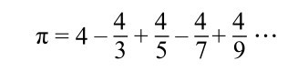
从第一项开始，然后逐个添加后面的项，产生以下数列（已被转换为小数）：
4→2.667→3.467→2.896→3.340→…
计算的项数越多，结果的差距越小，也越来越接近π。但这种方法需要300多项才能将π的值精确到小数点后两位，因此，使用这种方法以达到获得小数点后更多数字的目的是不现实的。
最终，微积分为π提供了其他无穷级数，这些级数虽然没有那么漂亮，但会使数字运算十分高效。1705年，天文学家亚伯拉罕·夏普（Abraham Sharp）算出了π的小数点后72位，刷新了范科伊伦百年前35位的纪录。这是一个相当大的成就，但也是个无用的成就。将π值精确到小数点后72位或者35位没有什么实际价值。对于精密仪器工程师来说，小数点后4位就足够了。以精确到小数点后10位的π值算出的地球周长误差不超过一厘米。以精确到小数点后39位的π值算出的环绕已知宇宙一圈的圆的周长，误差不超过一个氢原子的半径。但实用性并不是重点。在启蒙运动中计算π值的人并不关心应用，“数字狩猎”本身就是一种目的，也是一种浪漫的挑战。在夏普得到这个数值一年后，约翰·梅钦（John Machin）算到了100位；1717年，法国人托马斯·德拉尼（Thomas de Lagny）又增加了27位。18世纪末，斯洛文尼亚的尤里·维加（Jurij Vega）以140位暂时领先。
德国速算师扎哈里亚斯·达斯在1844年用两个月的时间将π的值推进到小数点后200位。达斯使用了以下级数，它看起来比之前的π的公式更复杂，但实际上更方便。这是因为，首先，它能以更快的速度逼近π。在9项后，精度就能达到小数点后两位。其次，反复出现的1/2、1/5和1/8非常便于操控。如果把1/5改写成2/10，1/8改写成1/2×1/2×1/2，所有涉及这些项的乘法，都可以简化为翻倍和减半的组合。达斯写出一个翻倍的参考表来帮助计算，他从2、4、8、16、32开始，根据需要一直写下去，因为他要计算π的小数点后200位，所以最后的翻倍得有200位长。这发生在连续667次翻倍计算之后。
达斯用了这个级数：
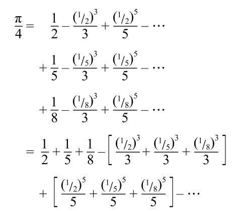
所以π=4（0.825-0.0449842+0.00632-…）
一项之后是3.3
两项之后是3.1200
三项之后是3.1452
达斯还没来得及庆祝自己的成就，英国人就开始觊觎他的成果了。不到10年后，威廉·拉瑟福德（William Rutherford）计算出π小数点后440位。他鼓励自己的门徒、业余数学家威廉·尚克斯（William Shanks）继续下去，尚克斯在达勒姆郡办了一所寄宿学校。1853年，尚克斯算到了607位；1874年，他已经进展到707位。他的纪录保持了70年，直到切斯特皇家海军学院的D. F. 弗格森（D. F. Ferguson）发现尚克斯的计算有误。他在第527位犯了一个错误，所以后面所有的数字都是错的。在第二次世界大战的最后一年，弗格森一直在计算π，我们只能假设他认为战争已经胜利了。1945年5月，他算到了530位；1946年7月，他算到了620位。之后，再也没有人用纸和笔来计算π了。
弗格森是最后一位手动的数字猎人，也是第一位“机械”猎人。在使用台式计算器之后，他在一年多的时间里，又推进了近200位。1947年9月，已知的π已达到808位小数。随后，计算机的出现改变了这场比赛。第一台与π战斗的计算机是“电子数字积分器和计算机”（ENIAC），它是第二次世界大战的最后几年里在美国马里兰州的美国陆军弹道研究实验室里诞生的，大小相当于一座小房子。1949年9月，ENIAC花了70个小时，计算出了π的小数点后2037位，以1000多个小数位的优势打破了之前的纪录。
随着π的越来越多位的数字被发现，一件事似乎变得很清楚：这些数字并不遵循明显的规律。然而直到1767年，数学家才得以证明这一毫无规律的数列永远不会重复。这一发现是在思考π可能是什么类型的数之后得出的。
最常见的数字类型是自然数。它们从1开始 [6] ：
1，2，3，4，5，6，…
然而，自然数的范围是有限的，因为它们只向一个方向扩展。更有用的是整数，它是自然数加上零和自然数的相反数：
…-4，-3，-2，-1，0，1，2，3，4，…
整数涵盖了从负无穷到正无穷的所有正整数和负整数。如果有一家酒店有无限层楼和无限层地下室，电梯里的按钮就是整数。
另一种基本类型的数是分数，当a和b是整数且b不等于0时，
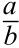
（也写作a/b）就表示分数。分数上面的数叫分子，下面的数叫分母。如果我们有几个分数，那么它们的最小公分母就是可以被所有分母整除的最小数。所以，1/2和3/10的最小公分母是10，因为2和10都能整除10。那么1/3、3/4、2/9和7/13的最小公分母是多少呢？换句话说，也就是能让3、4、9和13整除的最小的数字是多少？答案出人意料地大：468！我举这个例子是为了解释“最小公分母”虽然名里有“最小”，但通常并不小。最小公分母这个词通常被用来描述一些基本而简单的事物。这听起来有道理，但却与它算术上的意义背道而驰。最小公分母通常很大，而且并不常规：468是一个相当大的数！一个更具算术意义的概念是最大公约数，它是指可以整除几个数的最大数字。例如，3、4、9和13的最大公约数是1，你不可能得到比这更小或更简单的结果了。因为分数是整数的比率，所以它们也被称为有理数，有理数有无穷多个。事实上，在0到1之间就有无穷多个有理数。例如，让我们取分子为1，分母为大于等于2的自然数，就得到了这样一组分数：
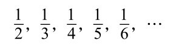
我们可以进一步证明，任意两个有理数之间存在无穷多个有理数。假设c和d是任意两个有理数，其中c小于d。在c和d的正中间是一个有理数，（c+d）/2。我们把这个点的数叫作e。我们现在可以在c和e的正中间找到一个数，它是（c+e）/2。它也是有理数，同样存在于c和d之间。我们可以无限地进行这样的步骤，把c和d之间分成距离越来越小的片段。不管c和d之间的距离有多小，它们之间总存在无限多个有理数。
有人认为，既然我们总能在任意两个有理数之间找到无穷多个有理数，所以可以认为有理数涵盖了所有的数。当然，这是毕达哥拉斯希望的。他的形而上学是基于这样一种想法：世界由数字和它们之间的和谐比例构成。一个不能用比率来描述的数字的存在，虽然不与他的构想完全矛盾，但也削弱了他的地位。然而对毕达哥拉斯来说不幸的是，有些数字确实不能用分数表示，而且让他尴尬的是，他自己的定理就能帮我们找到这样的数。假设一个正方形每条边的长度都为1，那么对角线的长度就是2的平方根，这个数字就不能写成分数。（我在附录中附上了一份证明，详见第485页。）
不能写成分数的数叫作无理数。据传，无理数的存在首先被毕达哥拉斯的信徒希帕索斯（Hippasus）证明了，这让他在学派里很不受欢迎：他被划为异教徒，扔到海里淹死了。
当一个有理数以小数形式写出来时，它要么包含有限的位数，比如1/2可以被写成0.5，要么可以循环，就像1/3等于0.3333…，其中3永远重复下去。有时这个循环不止一个数字，例如1/11，它等于0.090909…，其中数字09是循环的；1/19也是一个例子，它等于0.0526315789473684210…，其中052631578947368421是循环的。相反，当一个数字是无理数时，它以小数的形式展开后将永远不会重复，这是区分有理数和无理数的一个关键。
1767年，瑞士数学家约翰·海因里希·兰伯特（Johann Heinrich Lambert）证明π是一个无理数。早期的π研究者或许希望在3.14159…的最初混乱后，噪声会平静下来，形成一种规律。兰伯特证实这是不可能的。π的小数展开会以一种毫无规律的方式走向无限。
对无理数感兴趣的数学家想把它们进一步分类。18世纪，他们开始构想一种特殊的无理数，被称为超越数。这些数字十分神秘而隐秘，用有限的数学是无法捕捉到它们的。例如，2的平方根
虽然是无理数，但它也是方程x2
=2的解。但是超越数这种无理数是不能用一个包含有限多个项的方程来描述的。当超越数的概念被首次提出时，没有人知道它们是否存在。
但它们确实存在。约100年后，法国数学家约瑟夫·利乌维尔（Joseph Liouville）终于想出了几个例子，但不包括π。又过了40年，德国的费迪南德·冯·林德曼（Ferdinand von Lindemann）终于证明π是一个超越数。这个数不在有限代数的领域之内。
林德曼的发现是数论中的一个里程碑。它也解决了数学中最著名的未解问题：“化圆为方”是否可能。为了解释它是如何做到这一点的，我需要引入一个公式：圆的面积是πr2 ，其中r是圆的半径（半径是从圆的中心到边缘的距离，是直径的一半）。有一个直观的例子可以证明这一点，我们用馅饼来举例，馅饼是π的最佳比喻 [7] 。假如你有两块同样大小的圆形馅饼，一块是白色的，另一块是灰色的，如图4-3中的A所示。每块馅饼的周长是π乘以直径，也就是π乘以两倍半径，也就是2πr。当两块馅饼以同样方式被切成几部分时，这些部分可以被重新排列，图B是被切成4份并重新排列的形状，图C则是被切成10个部分并重新排列的形状。在这两种情况下，边的长度都是2πr。如果我们继续切成更小的部分，那么这个形状最终会变成一个矩形，如D所示，矩形的边长分别为r和2πr。矩形的面积（也就是两块馅饼的面积之和）就是2πr2 ，因此一块饼的面积就是πr2 。
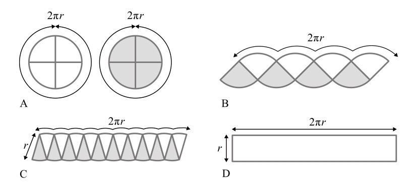
图4-3 圆的面积等于πr2 的证明过程
要使圆形变成正方形，我们必须（仅用圆规和直尺）构造一个与给定的圆面积相同的正方形。现在我们已知一个半径为r的圆，面积为πr2 ，我们还知道，一个面积为πr2 的正方形的边长一定是
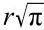
［因为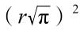
=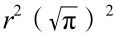
=r2 π=πr2 ］。因此，把圆变成正方形，可以被简化为，用长度r构造长度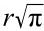
的问题。或者为了方便，将r取为1，就变成用1的长度来构造长度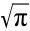
。我将在后面介绍，在坐标几何中，可以用代数的方法将一条直线表示为一个有限方程。只要x是一个有限方程的解，我们就可以用长度为1的线段开始构造一条长度为x的线。但如果x不是一个有限方程的解，换句话说，如果x是超越数，就不可能构建出一条长度为x的线。现在，π是超越数，意味着
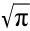
也是超越数（这一点你必须相信我）。所以我们不可能构建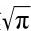
的长度。π是超越数的事实证明，圆是无法变成正方形的。林德曼对π的超越性的证明，打破了无数数学家长久以来的梦想。很多人曾宣称自己已经将圆变成了正方形，其中最著名的或许是托马斯·霍布斯。他是17世纪的英国思想家，他的著作《利维坦》标志着政治哲学的建立。霍布斯在晚年痴迷于几何学，在67岁时发表了他的解法。尽管在当时，化圆为方仍然是一个悬而未决的问题，但科学界对他的证明感到很困惑。牛津大学教授、艾萨克·牛顿之前最优秀的英国数学家约翰·沃利斯（John Wallis）在一本小册子中指出了霍布斯的错误，由此引发了英国思想历史上最有趣（也是最无意义）的一场纷争。霍布斯在其著作《给数学教授的6堂课》中增加了一个附录，回应了沃利斯的评论。沃利斯用《对霍布斯先生的必要纠正，或学校纪律，鉴于他的课没有讲正确》来反驳。霍布斯在《约翰·沃利斯的荒谬的几何学、农村语言、苏格兰教会政治和野蛮的标志》中继续回击，促使沃利斯又写出了《霍布斯先生的观点被推翻》。争论持续了将近25年，直到1679年霍布斯去世。沃利斯很享受这种针锋相对的争论，借此他可以诋毁霍布斯的政治和宗教观点。当然，在几何学问题上，他是对的。在许多争端中，双方都有理，但霍布斯和沃利斯这次却不是这样。霍布斯无法化圆为方，因为这是不可能的。
证明不出化圆为方，并没有让人们放弃。1897年，印第安纳州立法机构曾考虑过一项法案，在这项法案中，乡村医生E. J. 古德温（E. J. Goodwin）提出了一种化圆为方的证明，他将该法案作为“送给印第安纳州的礼物”。当然，他搞错了。自从1882年费迪南德·冯·林德曼证明了化圆为方不可能以后，“化圆为方的人”这个词在数学领域就成为怪人的代名词。
在18世纪和19世纪，人们不仅从古代几何问题中揭示了π的神秘特性，而且在新的科学领域也发现了它们，这些领域有时与圆没有明显的联系。“这个神秘的3.141592…从每一扇门和窗中进来，从每一个烟囱里钻进来。”英国数学家奥古斯都·德摩根（Augustus De Morgan）如此写道。例如，钟摆摆动所需的时间与π有关。死亡人口的分布是一个关于π的函数。如果你掷硬币2n次，当n很大的时候，得到50%正面和50%反面的概率是1/（
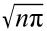
）。与不同寻常的π有紧密关联的人还包括法国博学者布丰伯爵（原名乔治-路易·勒克莱尔，1707—1788）。在布丰的众多各式各样的科学尝试中，最雄心勃勃的也许就是建造能正常工作的阿基米德的镜子，据说阿基米德用它们点燃了船只。布丰用168块平面镜制作了这样一个装置，每面镜子宽6英寸（约15厘米），长8英寸（约20厘米），整个装置能够点燃150英尺（约46米）远的一块木板，这是一次成功的试验，尽管这样的规模并不能点燃一支罗马舰队。
布丰提出了一个关于π的等式，该等式提供了一种计算π的新方法，尽管布丰本人并没有建立这种联系。布丰是在研究一款名为“干净瓷砖”的18世纪赌博游戏时得出了这个方程，在这个游戏中，你要把一枚硬币扔到瓷砖表面，就它是否会碰到瓷砖之间的接缝下注。布丰想出了下面的替代方案：想象地板上有一系列间隔均匀的平行线，在上面扔一根针。然后，他计算出，如果针的长度是l，线之间的距离是d，那么就可以得到下面的等式：
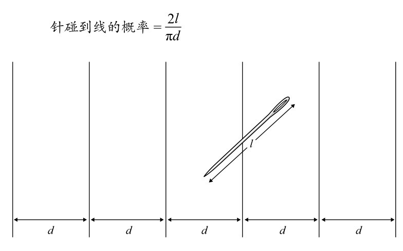
图4-4 在平行线上投针
布丰死后几年，皮埃尔·西蒙·拉普拉斯发现这个等式可以被用来估计π的值。如果你往地板上扔很多根针，那么针碰到线的次数与投掷的次数的比率，将大约等于针碰到线的概率。换句话说，在多次投掷之后，
针碰到线的次数/投掷次数≈
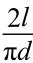
也就是说，
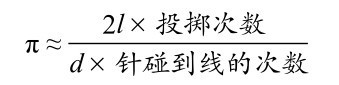
虽然拉普拉斯是第一个用这种方法来估算π的人，但是由于他使用了布丰提出的方程，所以人们将这一功劳记在了布丰的头上。他因此位列找到计算π的新方法的数学家中的一员，与阿基米德和莱布尼茨等人齐名。
投掷针的次数越多，得到的结果就越接近π的真实值，而当数学家无法想出更具创造性的方法来打发时间时，将针对准棋盘就成为一种标准的消遣方式。然而，你需要投掷很多次，才能得到有趣的结果。据说，早期的尝试者包括曾参加美国内战的一位名叫福克斯的上尉，他在养伤时，将一小段电线往一块带有平行线的板子上扔了1100次，并成功地将π推进到小数点后两位。
π的数学特性使它成为数字界的“名人”，同时也成为一个普遍的文化标志。因为π的数字模式永远不会重复，所以它们非常适合用来展示记忆力。如果你很擅长记数字，那么你的最高挑战就是π包含的数字。至少从1838年以来，背诵π的数字就成了一种消遣，当时《苏格兰人报》报道，一个12岁的荷兰男孩在科学家和王室人员面前背诵了当时所有已知的155位数字。现年60岁的退休工程师原口证（Akira Haraguchi）保持着目前的世界纪录。2006年，他在东京附近的一个大会堂背诵了圆周率小数点后10万位，全程被拍摄下来。演出耗时16小时28分钟，其中每隔两小时休息5分钟，在此期间他会吃饭团补充体力。他向一名记者解释，π象征生命，因为它的数位从不重复，也不遵循任何规律。他说，记住π是“宇宙的宗教”。
背诵π看起来有些无聊，但是后来产生了一种竞争性的运动：一边背诵π一边表演杂耍！这项纪录由50多岁的瑞典精算师马茨·贝里斯滕（Mats Bergsten）保持，他在抛接三个球的同时背诵了9778位数字。然而，他告诉我，他最引以为豪的是在“珠穆朗玛峰测试”中取得的成就。在这次测试中，π的前10000位数字被分成了2000组，每组5个，从“14159”开始。测试时，主持人将随机读出其中一组数字，参赛者须根据记忆说出它们之前和之后的5个数字。马茨·贝里斯滕是世界上仅有的能准确无误地做到这一点的4个人之一，而且贝里斯滕的用时是最短的，只有17分39秒。他告诉我，随机回忆10000个数字，比按顺序记忆它们更让人精神紧张。
原口证在记忆这10万位小数时，用了一种记忆技巧，给从0到9的每个数字都分配音节，然后将π的小数翻译成单词，再组成句子。前15个数字听起来像是：“妻子和孩子出国了，丈夫不害怕。”在世界各地的文化中，学生都会利用单词来记住π的数字，但这通常不是通过分配音节来完成的，而是创造一个短语，每个单词中包含的字母数目表示连续的小数。据说天体物理学家詹姆斯·金斯（James Jeans）爵士发明了一段文本：“How I need a drink, alcoholic in nature, after the heavy lectures involving quantum mechanics. All of thy geometry, Herr Planck, is fairly hard.”（我多么需要喝一杯，自然中的酒精，在关于量子力学的艰深讲座之后。你所有的几何学，普朗克先生，都相当难。）How有3个字母，I有一个，need有4个，以此类推。
在所有数中，只有π激发了这种狂热。没有人想记住2的平方根，虽然它同样具有挑战性。π也是唯一一个启发了一个文学亚流派的数字。限制性写作是一种技巧，它要求写作者在文本中加入某种模式或禁止出现某种情况。有一类诗叫作“π诗”（piem），其中每个单词的字母数都由π决定，整首诗都是在这样的约束下写成。通常情况下，0用一个包含10个字母的单词来表示。最雄心勃勃的“π诗”是迈克·基思（Mike Keith）的《卡代伊华彩乐段》（Cadaeic Cadenza），它表示出了π的3835位数字。π诗始于埃德加·爱伦·坡的一个模仿作品：
One; A poem
A Raven
Midnights so dreary, tired and weary,
Silently pondering volumes extolling all by-now obsolete lore.
During my rather long nap—the weirdest tap！
An ominous vibrating sound disturbing my chamber’s andetoor.
‘This,’ I whispered quietly, ‘I ignore.’
一；一首诗
一只乌鸦
午夜如此沉闷，疲惫，令人厌倦，
默默思索着赞颂所有已过时的传说的书。
在我长时间的小睡中，最奇怪的踢踏！
一种不祥的震动声扰乱了我房间的前门。
“这个，”我轻声说，“我不理睬。”
基思说，有难度的限制性写作既是一种训练，也是一种发现。他说，由于π中的数字是随机的，所以使用它作为限制条件来写作“就像从混沌中恢复秩序一样”。当我问他“为什么偏偏选择了π？”时，他回答，π“象征着一切无限、神秘、不可预测或充满无限惊奇的事物”。
1706年，自从威尔士人威廉·琼斯（William Jones）在他的书《新数学入门，供一些没有闲暇或便利，可能也没有耐心去搜索不同的作者、翻阅乏味的书，但不可避免地需要在数学上取得进步的朋友使用》中引入π这个符号后，π才开始代表圆周率。这一希腊字母当时可能是“外围”一词的缩写，但它没有立即流行开来，30年后，当莱昂哈德·欧拉采用它时，π才成为圆周率的标准符号。
欧拉是有史以来最高产的数学家（他出版了886本书），他可能是对人们理解π贡献最大的人。正是他改进了计算π的公式，使18世纪和19世纪的数字猎人得以确认π的越来越多的小数位数。20世纪初，印度数学家斯里尼瓦萨·拉马努金（Srinivasa Ramanujan）进一步发展了π的欧拉式无穷级数。
拉马努金是一位自学成才的数学家，在给剑桥大学教授G. H. 哈代（G. H. Hardy）写信之前，拉马努金在马德拉斯做文员。哈代看到拉马努金重新发现了前人用几个世纪才取得的成果，十分惊讶，并邀请他到英国。在拉马努金32岁去世前，他们一直在英国进行合作。拉马努金的工作显示了他对包括π在内的数字性质的非凡直觉，他最著名的公式如下：
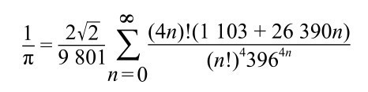
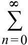
这个符号表示一系列的值相加，从n等于0时的结果开始，加上n等于1时，以此类推，直到无穷大。然而，即使不理解符号，我们同样可以欣赏这样一个方程的戏剧性。拉马努金的公式逼近π的速度可谓惊人。一开始，当n=0时，公式只有一项，就给出了精确到小数点后6位的π值。n每增加1，这个公式就增加8位数字。它仿佛是一台π的工业计算机。在拉马努金的启发下，20世纪80年代出生于乌克兰的数学物理学家格雷戈里·丘德诺夫斯基（Gregory Chudnovsky）和戴维·丘德诺夫斯基（David Chudnovsky）设计了一个更惊人的公式，每项可以增加约15位数字。
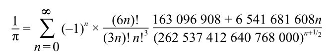
我第一次看到丘德诺夫斯基的公式的时候，我就站在它上面。格雷戈里和戴维是兄弟，他们在布鲁克林的纽约理工大学共用一间办公室。办公室包括一个开放的空间，角落里有一个沙发，房间里还有几把椅子，以及用几十个π的公式装饰着的蓝色的地板。“我们想在地板上装饰一些东西，除了与数学有关的东西，你还能把什么东西放在地板上呢？”格雷戈里解释道。
实际上，圆周率地板只是他们的次佳选择。他们最初的计划是放上一幅阿尔布雷希特·丢勒的《忧郁Ⅰ》（Melencolia I）的复制品（见第251页）。这幅16世纪的版画深受数学家的喜爱，因为它充满了对数字、几何和透视的有趣的引用。
“地面上起初什么都没有，一天晚上，我们印了2000多份《忧郁Ⅰ》，然后把它铺在地板上。”戴维说，“但如果你绕着它走，你就想吐！因为你的视角发生了非常突然的变化。”于是，戴维开始研究欧洲大教堂和城堡的地板，想要弄清要如何装饰办公室，才不会让走过的人感到恶心。“我发现它们大多是放一个……”
“简单的几何样式。”格雷戈里插话。
“黑、白、黑、白的方块……”戴维说。
“你想想，如果真的有一张复杂的照片，你试着走在它上面，角度变化太突然，你的眼睛就会不喜欢它。”格雷戈里补充，“所以你唯一能做的就是……”
“吊在天花板上！”戴维在我的左耳边叫道，然后他们两人都开始大笑。
和丘德诺夫斯基兄弟对话，就像戴着立体声耳机，两只耳朵的声音不规律地交替。他们让我坐在沙发上，然后两人坐在我的两边。他们不停地打断对方，接上对方的句子，操着浓重的斯拉夫口音说英语。这对兄弟出生在苏联时期的乌克兰基辅，不过他们从20世纪70年代末就一直生活在美国，也是美国公民。他们合作撰写了很多论文和书籍，而且希望被当成一个数学家，而不是两个。
然而，尽管他们的基因相似，交谈方式和职业都相同，但他们的外表却大有不同。这主要是因为56岁的格雷戈里患有重症肌无力，这是一种肌肉的自身免疫紊乱。他消瘦而孱弱，大部分时间都躺着。我从没见过他从沙发上起来。不过，他缺乏力量的四肢被一张表情鲜明的脸所弥补，他一谈起数学，表情就立刻活跃起来。他的五官尖锐，有一双棕色的大眼睛，白胡子，头发蓬乱。戴维有一双蓝眼睛，比弟弟年长5岁，身体更圆，脸更丰满。他剃光了胡子，短发藏在橄榄绿的棒球帽下面。
丘德诺夫斯基兄弟可以说是近年来在普及π方面做出贡献最多的数学家。20世纪90年代初，他们在曼哈顿的格雷戈里的公寓里，用邮购的零件制造了一台超级计算机，他们使用这台计算机计算出了π的超过20亿位小数，这创下了当时的纪录。
这一惊人的成就被记录在《纽约客》的一篇文章中，这篇文章又启发了1998年的电影《圆周率》（Pi）。电影主角是一个头发乱蓬蓬的数学天才，他用一台自制的超级计算机，寻找股市数据中隐藏的规律。我很想知道丘德诺夫斯基兄弟是否看过这部电影，这部电影获得了好评，成了低成本的心理数学惊悚片的典范。“没有，没有，我们没看过。”格雷戈里说。
“你要知道，电影制作人通常在电影里会重述他们的内心状态。”戴维讽刺地说。
我告诉他们，我以为他们会因为受到关注而感到高兴。
“完全没有。”格雷戈里咧着嘴笑了。
“我再告诉你一件事。”戴维插嘴说，“两年前，我从法国回来。在我离开的前几天，有一个大型书展。我在一个摊位驻足，摊位上有本书里有一篇侦探小说。故事是一位工程师写的。这是个谋杀悬疑故事，你知道的。很多尸体接连被发现，大多是旅馆里的情妇，而决定凶手所做的一切的源头，就是π。”
格雷戈里笑得合不拢嘴，低声说：“好吧，我肯定不会读这本书的，一定不会。”
戴维接着说：“所以我和那个人聊了聊。他是一个受过良好教育的人。”他停顿了一下，耸了耸肩，把音调提高了八度：“正如我所说，我不承担任何责任！”
戴维说，他第一次看到纪梵希香水的广告牌时惊呆了。“一路上都是π……π……π……”他高声抱怨道，“π……π……π！我对此有责任吗？”
格雷戈里瞥了我一眼，说：“出于某种原因，公众对π这个数很着迷，但他们的印象是错误的。”他说，有很多专业数学家研究π。他还挖苦道：“这些人通常是不会被看到的。”
在20世纪50年代和60年代，由于计算机技术的进步，人们发现了π的更多小数位。到20世纪70年代末，这一纪录已被打破9次，到达小数点后100多万位。然而，在20世纪80年代，更快的计算机和全新算法的结合，开启了一个数字狩猎的疯狂新时代。在日本和美国之间的π竞赛中，东京大学的年轻计算机科学家金田康正抢得先机。1981年，他用一台NEC（日本电气公司）计算机在137小时内计算出π的200万位小数。三年后，他的结果达到了1600万位。美国加利福尼亚州数学家威廉·戈斯珀（William Gosper）随后以1750万位的成绩领先，随后，NASA的戴维·H. 贝利（David H. Bailey）以2900万位的成绩又战胜了他。1986年，金田以3300万位的成绩再度实现超越，并在接下来的两年里，又三次打破自己的纪录，用一台新的机器S-820达到了2.01亿位，而这台机器只用了不到6个小时就完成了计算。
虽然远离数字狩猎的聚光灯，但丘德诺夫斯基兄弟也开始关注π。格雷戈里使用了一种互联网的新通信方法，将他床边的计算机连接到位于美国不同地点的两台IBM（美国国际商用机器公司）超级计算机上。然后兄弟两人根据他们此前发现的超高速计算公式设计了一个程序。只有在晚上和周末没有人使用电脑时，他们才被允许使用电脑。
“这是一个伟大的事业。”格雷戈里回忆道。在那些日子里，没有哪个计算机的容量能存储他们正在计算的数字。“他们把π记录在磁带上。”他说。
“迷你磁带。你得打电话给那个人去问他……”戴维补充。
“说磁带号码是多少多少。”格雷戈里接着说，“有时，如果别人的事情更重要，你的磁带会在计算过程中被卸下。”他的眼睛转了一下，就好像在空中挥了一下手。
尽管障碍重重，丘德诺夫斯基兄弟仍在继续计算，他们突破了10亿位数。随后，金田又把数位向前推进了一小段距离，然后丘德诺夫斯基兄弟又以11.3亿位数重新回到领先位置。戴维和格雷戈里决定，如果要认真地计算π，他们需要拥有自己的机器。
丘德诺夫斯基超级计算机就位于格雷戈里公寓的一个房间里。这台机器由通过电缆连接的处理器组成，据估计，整台机器的成本约为7万美元。考虑到要买到一台有类似性能的机器需要数百万美元，这个价格很便宜了。但它有自身的复杂之处，与他们的生活方式有关。他们称为m0（m zero）的这台电脑一直处于开机状态，以防关机造成不可逆的影响，房间里需要支起25个风扇才能保持它凉爽。兄弟俩很小心，不能在公寓里开太多灯，防止破坏了线路。
1991年，戴维和格雷戈里用自制的装置计算出了π后面超过20亿位小数，随后，他们把研究重心转移到其他问题上。1995年，金田再次取得领先；2002年，他达到了1.2万亿位数字，但这一纪录只保持到2008年，当时筑波大学的同人算到了2.6万亿位。2009年12月，法国人法布里斯·贝拉尔（Fabrice Bellard）用丘德诺夫斯基公式创造了一项新的纪录：将近2.7万亿位。他用自己的台式电脑花了131天计算出这一结果。
如果你用很小的字体写下一万亿位数字，它们连起来的距离可以通往太阳。如果你在一页纸上放下5000位数字（这种字号很小了），然后把每一页纸叠在一起，最上面的纸将达10千米高。将π计算到如此荒谬的长度有什么意义呢？其中一个原因与人有关：纪录就是用来打破的。
但还有另一个更重要的动机。寻找越来越精确的π值是测试计算机处理能力和可靠性的一种理想方法。“我对拓展π的已知值没有兴趣。”金田曾说，“但我对提高计算性能很感兴趣。”计算π现在对测试超级计算机的性能很重要，因为它是一项“高负荷工作，需要占用大量的主内存，进行大量的数字运算，并提供检查答案是否正确的简单方法。数学常数，比如2的平方根、e [8] 、γ，都可以用来测试，但π是最有效的”。
π的故事很有循环性。它是数学中最简单、最古老的比率，而如今又被改造为计算机技术前沿的一个极其重要的工具。
事实上，丘德诺夫斯基兄弟对π的兴趣主要来自他们建造超级计算机的愿望，这一愿望如今仍然强烈。兄弟二人目前正在设计一种芯片，并声称这将是世界上速度最快的芯片，它只有2.7厘米宽，但包含16万个更小的芯片和1.75千米长的电线。
在讨论他们的新芯片时，格雷戈里变得非常兴奋。“计算机的性能每18个月就增加一倍，不是因为它们速度变快了，而是因为它们可以装入更多的东西。但还有一个棘手的问题。”他说。如何把芯片分割成更小的部分，以便它们能够以最高效的方式相互交流，是一个数学上的难题。他在笔记本电脑上展示了芯片的电路。“我认为这个芯片的问题在于，它是个‘资本主义芯片’！”他叫道。“问题是，这里的大多数元件都没有在做任何事情。这里的无产者并没有很多。”他指着一个部分。“这只是如何管理芯片内部空间的问题。”他感慨道，“大多数元件只是用来储存和计算。太可怕了！谁来负责制造呢？”
在卡尔·萨根的畅销书《接触》（Contact）中，一个外星人告诉地球上的一位女士，虽然π中的数字是随机的，但后面包含了一些用0和1组成的部分。这个部分出现在1020 （也就是1后面带20个零）位小数之后。因为我们现在只把π算到了2.7万亿位（27后面跟着11个零），所以我们还要再努力一段时间，才能知道他是否在编造故事。实际上，我们还有更进一步的工作要做，因为这段数字显然是用十一进制写成的。
π可能有规律可循这个想法很令人兴奋。随着π被计算得越来越精确，数学家一直在寻找π的小数的特征。π的无理性意味着，这些数字会不停地毫无规律地喷涌而出，但这并不能排除出现有规律片段的可能性，比如包含0和1的消息。然而，到目前为止，还没有人发现任何有意义的部分。不过，这个数字确实有它的奇怪之处。第一个0出现在第32个位置，这比随机分布情况下的预期要晚得多。第一次出现连续重复六次是小数点后762位起的999999。如果是随机出现，那么6个9出现得如此早的可能性小于0.1%。这个序列被称为费曼点，因为物理学家理查德·费曼曾经说过，他只想记住在那个点之前的数字，最后说“9，9，9，9，9，9，等等”。下一次出现连续6个相同的数字是在它的193034位，也是连续的6个9。这是来自远方的消息吗？如果是，那是什么意思？
如果一个数展开后，0到9出现的频率相等，则认为该数是正规（normal）的。π正规吗？金田查看了π的前2000亿个数字，发现这些数字出现的频率如下：
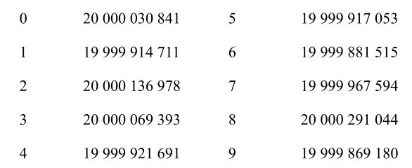
只有数字8似乎出现得最多，但差距并没有达到统计学上显著的标准。π似乎是正规的，但没有办法能够证明。然而，也没有人能证明，这样的证明是不可能的。因此，π也有可能是不正规的。也许1020 位后真的就只有0和1了呢？
另一个不同但相关的问题是数字的位置。它们是随机分布的吗？斯坦·瓦贡（Stan Wagon）用“扑克牌测试”分析了π的前1000万位：取连续5位数字，把它们当作一手牌。
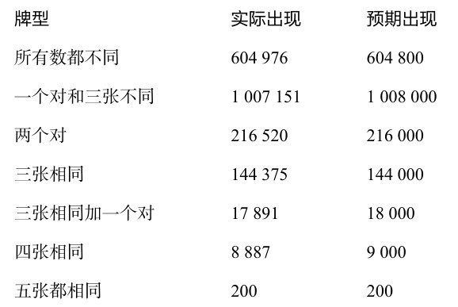
右列表示，如果π是正规的，并且每个小数位被占据的机会相等，那么我们预期会看到的牌型出现的次数。结果完全在我们预期的范围之内。每个数字出现的频率似乎都与随机产生小数的频率一样。
有一些网站提供了你生日的数字第一次出现在π中的位置。数列0123456789第一次出现在第17387594880位，这是在1997年金田算到这一位置时才发现的。
我问格雷戈里，他是否相信在圆周率中能找到一种规律性。“没有什么规律。”他轻蔑地回答，“如果有规律的话，那就很奇怪了，而且也不对。所以在这里浪费时间是没有意义的。”
有些人并不关注π的规律，而是把它的随机性看作是数学之美的主要表现。π是一个早已确定的数字，但它似乎非常好地模拟了随机性。
“它是一个很好的随机数。”格雷戈里赞同道。
丘德诺夫斯基兄弟开始计算π之后不久，接到了美国政府的电话。戴维模仿电话那头的长而尖的声音说：“你们能发来π吗？”
工业界和商业界都需要随机数。比如，一家市场调查公司需要对100万人口中的1000人进行抽样调查。公司要使用随机数生成器来选择样本组。生成器在提供随机数方面的能力越强，样本的代表性就越强，调查结果也就越准确。同样，在测试计算机模型时，也需要随机数流来模拟不可预测的场景。数字越随机，测试就越可靠。事实上，如果用于测试项目的随机数不够随机，项目可能会失败。“你的随机数决定了你的优秀程度。”戴维说。“如果你使用的随机数很糟糕，你最终也会陷入糟糕的境地。”格雷戈里总结道。在所有可用的随机数集合中，π的小数是最好的。
然而，这里也存在一个哲学悖论。π显然不是随机的。它或许表现得像一个随机数，但它的数字是固定不变的。例如，如果π中的数字是随机的，那么小数点后的第一个数字是1的可能性只有10%，然而我们知道它已经确定是1。π表现出了非随机性的随机性——这很有趣，也很奇怪。
π是一个被研究了几千年的数学概念，但它还有许多秘密未被解开。从一个半世纪前，它的超越性被证明后，数学家在理解π的本质方面并没有取得重大进展。
“实际上，我们对它的大部分事情一无所知。”格雷戈里说。
我问，在理解π方面是否会有新的进展。
“当然，当然，”格雷戈里说，“进步总会有的。数学会一直向前发展。”
“它会更神奇，但不会很好。”戴维说。
1968年是全世界反主流文化兴起的一年，英国也未能幸免于这种代际的剧变。5月，财政部宣布推出一种革命性的新硬币。
推出50便士的硬币是为了取代以前的10先令纸币，这是一种从英制货币向十进制货币的转换。然而，这枚硬币最与众不同之处不是它的面值，而是它独特的形状。
“这不是普通的硬币。”《每日镜报》的报道说，“为什么呢？十进制货币委员会称它是‘多边曲线七边形’。”以前从来没有一个国家推出过七边形的硬币，也从来没有一个国家表达过对几何图形的美学的如此强烈的愤怒。领导这场战争的是德比郡罗塞特的退役陆军上校埃塞克斯·莫尔克罗夫特（Essex Moorcroft），他成立了“反七边形”组织。“我们的座右铭来自克伦威尔由衷的呐喊：‘拿走这个小玩意儿’。我成立这个协会，因为我认为我们的女王会因这种七边形的畸形受到侮辱。”他说，“这是一枚丑陋的硬币，上面有君主的形象，它是对我们君主的侮辱。”
尽管如此，50便士硬币仍在1969年10月开始流通，莫尔克罗夫特上校没能阻止得了它。事实上，1970年1月的《泰晤士报》报道称，“曲线优美的七边形似乎赢得了一些人的喜爱”。如今，50便士硬币被认为是英国文化遗产中一个独特而珍贵的部分。1982年推出的20便士硬币也是七边形的。
50便士和20便士实际上堪称设计上的经典。它们七边形的形状意味着，很容易把它们与圆形硬币区分开来，特别是对于盲人和视力有障碍的人而言。它们也是流通中的硬币中最有深意的：它表明，圆并不是数学中唯一有趣的曲边形。
圆可以被定义为一条曲线，其上的每一点都与一个固定的点（圆心）等距。它的这种性质有许多实际应用。人类的第一个伟大发明——轮子就是一个最明显的例子。当车轮沿地面平稳旋转时，连接在车轮中心的车轴将保持在地面之上的固定高度，这就是手推车、汽车和火车能运行平稳而不会上下颠簸的原因。
然而，如果要运输非常重的货物，轮轴可能无法承担重量。另一种方法是用滚筒。滚筒是一种长管，截面是圆形的，躺倒在地面上。如果一个底部平坦的重物（例如建造金字塔的巨大的长方体石头）被放在几个滚筒上，它就可以在滚筒上被平稳地推行，随着重物不断向前移动，新的滚筒会被挪到前面。
滚筒的关键特征是，地面和滚筒顶部的距离始终保持不变。显然，圆形截面满足这种情况，因为圆形的宽度（直径）总是相同的。
滚筒的截面只能是圆形吗？还有其他形状可以用吗？一个看起来反直觉的事实是，有很多形状都能形成完美的滚筒。一个例子就是50便士硬币。
如果你把很多枚硬币焊接在一起，变成一个横截面为50便士硬币的滚筒，然后把这本书放在这些滚筒上，当你推动它时，这本书不会上下摇晃，它会像在圆柱上一样平稳地往前走。
之所以会发生这种情况，是因为50便士硬币的边缘是一条定宽曲线。在它边缘的任何地方测量，50便士硬币的宽度都是一样的。所以，当一枚50便士硬币沿地面滚动时，从地面到硬币顶部的距离总是相等的。因此，把一本书放在一组50便士组成的滚筒上时，它的高度会保持不变。
令人惊讶的是，定宽曲线有很多。最简单的是勒洛三角形，它由一个等边三角形构成，把圆规的针尖放在每个顶点上，连接另两个顶点画出弧。在图4-5中，将圆规放在A处，将铅笔从B移动到C，然后对其他顶点重复这个过程，就画出了勒洛三角形。多边曲线七边形的构造方法相同。定宽曲线不要求对称。可以通过任意数量的交叉线来构造它们，如图4-5右边所示。以顶点为圆心的圆弧构成了周长。
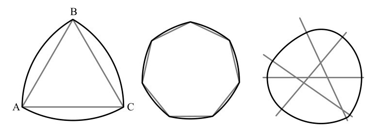
图4-5 定宽曲线包括勒洛三角形（左）和多边曲线七边形（中），它因为50便士硬币的形状而广为人知
曲线三角形得名于德国工程师弗朗茨·勒洛（Franz Reuleaux），他在1876年出版的《机械运动学》中，首次阐述了曲线三角形的应用。多年后，曾任机械工程师学会主席的H. G. 康韦（H. G. Conway）读到了这一点，当时他是英国财政部十进制货币委员会的一员。康韦建议50便士硬币采用定宽的非圆曲线形状，因为这一特性使它更适合投币的机器。这些机器通过测量直径来区分硬币，而50便士硬币无论处于什么位置，宽度都相同。（一枚正方形的硬币，即使换成弧形的边，也不可能宽度不变，这就是为什么没有四边形的硬币。）最终，委员会选择了七条边的形状，因为他们认为它是最美观的。
虽然勒洛三角重新发明了滚筒，但它并没有重新发明轮子。车轮不能由勒洛三角制成，因为等宽的非圆曲线没有“中心”，也就是一个与周长上的每个点距离都相等的固定点。如果你让一个轴穿过勒洛三角形并滚动它，形状的高度将保持不变，但轴会上下移动。
勒洛三角的一个实用特性是，它可以在正方形内旋转，而始终接触正方形内的四条边。1914年，生活在美国宾夕法尼亚州的英国工程师哈里·詹姆斯·沃茨（Harry James Watts）利用了这个特性，设计了一种奇特的工具：一种可以钻方孔的钻头。（钻出的孔的角是圆的，不是尖的，所以严格地说，这个孔是一个修正过的正方形。）
沃茨发明的钻头的横截面是一个勒洛三角形，但去掉了三部分，形成三个尖端。它配有一个特殊的夹盘，来补偿钻头旋转时中心的摆动。沃茨方孔钻至今仍在使用。
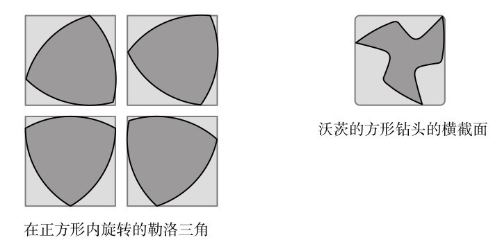
图4-6 勒洛三角与能钻方孔的钻头
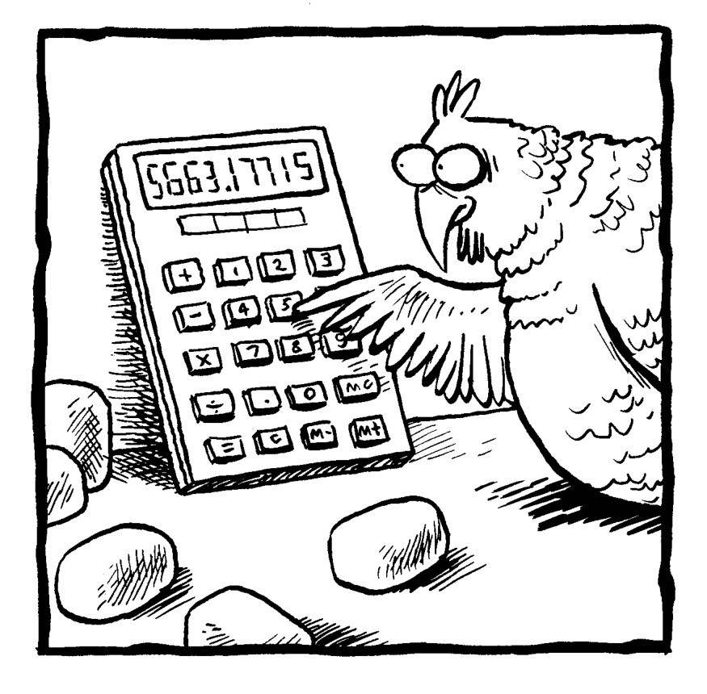
[1] 1英里=5280英尺。——译者注
[2] 英担、磅均为英制重量单位，1英担=112磅。——译者注
[3] 英国旧时钱币，1法寻=1/4便士。——译者注
[4] 英国旧时钱币。1先令=12便士。——译者注
[5] 古代长度单位，1肘≈0.45米。——译者注
[6] 我国数学教材规定自然数包括0，即为0，1，2，3，…。——编者注
[7] 在英语里，π和馅饼（pie）同音。——编者注
[8] 数学常数e是一个无理数，开头几位小数是2.718281828，格雷戈里·丘德诺夫斯基把它叫作“两倍托尔斯泰”，因为这位俄国小说家生于1828年。它和爱因斯坦的等式E=mc2 无关，这个公式里的E代表能量。